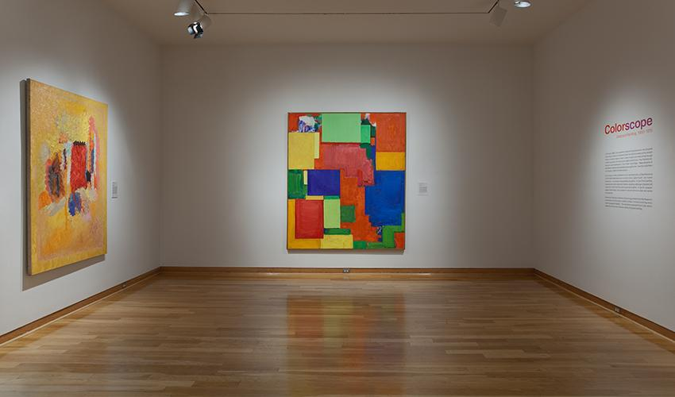

Colors in Art
Pedagogical Philosophy: Colors can express emotions and ideas, making them a powerful tool for non-verbal communication.

Museum Activities:
- Educators can organize tours focused on the use of color in different artworks. They can ask children to describe their feelings about the colors they see and discuss with educators.
- Educators can set up stations where children can create their own color-based artworks inspired by museum pieces.
Values:
Colors can enhance emotional expression and understanding. Children can learn to associate colors with feelings and ideas, facilitating better communication.